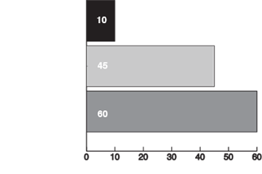

Brakes:
Race or fast road spec pads all round.
Suspension:
Set the front for negative Camber to help with oversteer.
The rears should be set with very little negative camber to reduce grip in corners.
Steering:
Small steering wheels are actually worse to use.
Clutch:
Any extreme heavy duty clutch.
Oversteer by acceleration
Power Over:
If you're cornering and put enough power on the wheels in a RWD car, the natural tendency of the car is to oversteer
Clutch Kick:
During a corner you briefly “kick” down the clutch while remaining on the throttle
Oversteer by weight transfer
Braking:
You upset the balance only with steering and braking, without locking the gears
Feint:
The feint drifting technique (also called inertia drift) involves using the momentum of the car to get the car drifting
Lift Off:
For the lift off drifting technique you create oversteer by overspeeding and steering into the corner while simultaneously lifting off your foot from the throttle
how to drift
drifting competition judging
criteria
Body work:
Secure bumper with cable ties.
Tyres:
Stick with cheap part worn tyres and adjust tire pressure
Safety:
Helmet, Harness, Fire Extinguisher, Roll Cage etc
Oversteer by deceleration
E-Brake:
Using the e-brake drifting technique you can lock-up the rear wheels to influence the car’s behavior
Shift-Lock:
It’s a novice technique that you’ll most likely be practicing on snow or wet surfaces
Long Slide:
The long slide drifting technique, also known in Japan as Side-Long, or “Choku-Dori” goes above the advanced drifting techniques
Advanced drifting techniques
Swaying:
when the car is drifting side to side by turning steering wheel
experience levels

 Main Site
Main Site